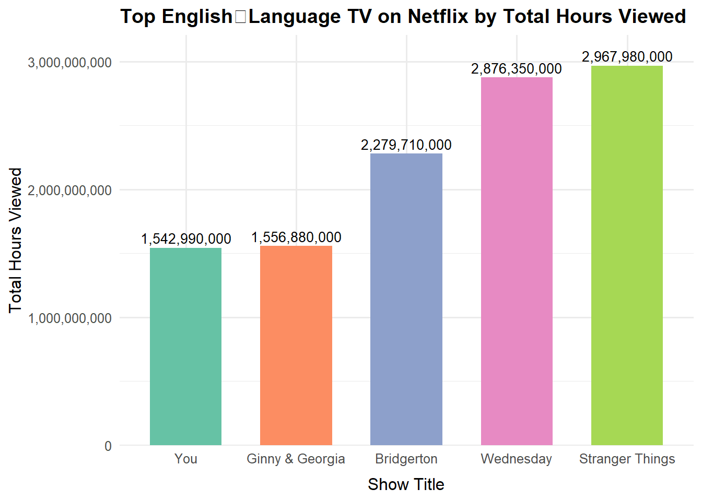

Mini Project #01: Gourmet Cheeseburgers Across the Globe
Author
PAVEN227
Summary
This project examines Netflix’s Top 10 datasets to analyze global and regional streaming trends. Data were collected from Netflix’s TuDum website, which tracks weekly rankings and total viewing hours for films and TV shows across multiple countries. The analysis focuses on identifying patterns in audience engagement, highlighting the most popular titles, and comparing performance across regions and time periods. By exploring these datasets, the project provides insights into global viewing preferences, content longevity, and the growing influence of international productions on Netflix’s platform.
Code
# Global optionsoptions(scipen =999) # avoid scientific notation# Load librarieslibrary(tidyverse)library(readr)library(DT)library(lubridate)library(stringr)# Create data directoryif(!dir.exists(file.path("data", "mp01"))){dir.create(file.path("data", "mp01"), showWarnings=FALSE, recursive=TRUE)}# Download GLOBAL dataGLOBAL_TOP_10_FILENAME <-file.path("data", "mp01", "global_top10_alltime.csv")if(!file.exists(GLOBAL_TOP_10_FILENAME)){download.file("https://www.netflix.com/tudum/top10/data/all-weeks-global.tsv", destfile=GLOBAL_TOP_10_FILENAME)}# Download COUNTRY dataCOUNTRY_TOP_10_FILENAME <-file.path("data", "mp01", "country_top10_alltime.csv")if(!file.exists(COUNTRY_TOP_10_FILENAME)){download.file("https://www.netflix.com/tudum/top10/data/all-weeks-countries.tsv", destfile=COUNTRY_TOP_10_FILENAME)}# Import BOTH datasetsGLOBAL_TOP_10 <-read_tsv(GLOBAL_TOP_10_FILENAME)COUNTRY_TOP_10 <-read_tsv(COUNTRY_TOP_10_FILENAME, na ="N/A")
Acquire data from the website
Data was acquired from Netflix’s TuDum Top 10 website, capturing weekly rankings and viewership of the most popular shows and films globally and by country.
The downloaded TSV files from Netflix’s TuDum Top 10 were imported into R for analysis, enabling exploration and manipulation of weekly rankings, viewership, and other key metrics.
This step involves preparing the data for analysis by cleaning and transforming it. Key tasks include formatting column names, identifying unique values, and converting units to make the dataset structured, consistent, and easier to work with. #### Leveraging the DT Package for Enhanced Table Readability
Code
if(!require("DT")) install.packages("DT") # installing DT packagelibrary(DT)GLOBAL_TOP_10 |>head(n=20) |># display first 20 records onlydatatable(options=list(searching=FALSE, info=FALSE)) #datatable() function is used to convert these 20 records into an interactive table (better styling with ability to scroll and sort the data)
Code
COUNTRY_TOP_10 |>head(n=20) |># display first 20 records onlydatatable(options=list(searching=FALSE, info=FALSE))
Formatting tables for clean column names and formatted number
Code
library(stringr)format_titles <-function(df){colnames(df) <-str_replace_all(colnames(df), "_", " ") |>str_to_title() # converting column names to Title Case df}GLOBAL_TOP_10 |>format_titles() |>head(n=20) |>datatable(options=list(searching=FALSE, info=FALSE)) |>formatRound(c('Weekly Hours Viewed', 'Weekly Views')) # formatting large numbers with comma separation and rounding
In this phase, we analyze the cleaned dataset to uncover patterns, trends, and insights. We summarize key metrics, identify top-performing shows and films, and answer specific questions about global and country-level viewership.
Answering Key Questions from Cleaned Data
Q1: How many different countries does Netflix operate in? (You can use the viewing history as a proxy for countries in which Netflix operates.)
The English-language film that stayed in the global Top 10 for the most weeks is All Quiet on the Western Front, which spent 23 weeks in the Top 10.
Q4: For each of the four categories, what program has the most total hours of global viewership?
Code
library(DT)library(dplyr)# Compute top show by total hours in each categoryq4_top <- GLOBAL_TOP_10 %>%group_by(category, show_title) %>%summarise(total_hours_viewed =sum(weekly_hours_viewed, na.rm =TRUE), .groups ="drop") %>%group_by(category) %>%slice_max(order_by = total_hours_viewed, n =1) %>%ungroup() %>%arrange(desc(total_hours_viewed))# Save vectors for inline codeq4_titles <- q4_top$show_titleq4_hours <- q4_top$total_hours_viewedq4_cats <- q4_top$category# Display tableq4_top %>%format_titles() %>%datatable(options =list(searching =FALSE, info =FALSE)) %>%formatRound(c("Total Hours Viewed"), digits =0)
Code
# Prepare inline textq4_top <- q4_top %>%mutate(total_hours_viewed =round(total_hours_viewed, 0))# Optional: print all four statements in the console / notebookfor(i in1:nrow(q4_top)) {cat(paste0("The show with the highest global hours of viewership in ", q4_top$category[i], " is **", q4_top$show_title[i], "**, with **", format(q4_top$total_hours_viewed[i], big.mark=","), "** hours viewed globally.\n\n" ))}
The show with the highest global hours of viewership in TV (Non-English) is **Squid Game**, with **5,048,300,000** hours viewed globally.
The show with the highest global hours of viewership in TV (English) is **Stranger Things**, with **2,967,980,000** hours viewed globally.
The show with the highest global hours of viewership in Films (English) is **KPop Demon Hunters**, with **591,300,000** hours viewed globally.
The show with the highest global hours of viewership in Films (Non-English) is **Society of the Snow**, with **235,900,000** hours viewed globally.
The show with the highest global hours of viewership in TV (Non-English) is Squid Game, with 5,048,300,000 hours viewed globally.
Q5: Which TV show had the longest run in a country’s Top 10? How long was this run and in what country did it occur?
Code
library(dplyr)library(DT)library(stringr)# Find the longest-running TV show in a country's Top 10tv_longest_run <- COUNTRY_TOP_10 %>%filter(str_detect(category, "^TV"), !is.na(cumulative_weeks_in_top_10)) %>%group_by(.data[[country_col]], show_title, season_title) %>%summarise(total_weeks =max(cumulative_weeks_in_top_10, na.rm =TRUE), .groups ="drop") %>%arrange(desc(total_weeks)) %>%slice(1)# Save for inline textq5_title <- tv_longest_run$show_titleq5_season <- tv_longest_run$season_titleq5_country <- tv_longest_run[[country_col]]q5_weeks <- tv_longest_run$total_weeks# Display table like your exampletv_longest_run %>%rename(`Show Title`= show_title,`Season Title`= season_title,`Country Name`=!!country_col,`Total Weeks`= total_weeks) %>%datatable(options =list(pageLength =5, searching =FALSE, info =FALSE))
The Non-English TV show that stayed in the global Top 10 for the most weeks is Money Heist, which spent 127 weeks in the Top 10.
Q6: Netflix provides over 200 weeks of service history for all but one country in our data set. Which country is this and when did Netflix cease operations in that country?
Code
library(dplyr)library(DT)# Compute total weeks of service for each countrycountry_weeks <- COUNTRY_TOP_10 %>%group_by(.data[[country_col]]) %>%summarise(total_weeks =n_distinct(week),last_week =max(week),.groups ="drop" ) %>%arrange(total_weeks)# Find the country with the fewest weeksq6_country_data <- country_weeks %>%slice(1)# Save vectors for inline textq6_country <- q6_country_data[[country_col]]q6_weeks <- q6_country_data$total_weeksq6_last <- q6_country_data$last_week# Display as a tableq6_country_data %>%rename(`Country Name`=!!country_col,`Total Weeks`= total_weeks,`Last Week`= last_week ) %>%datatable(options =list(pageLength =5, searching =FALSE, info =FALSE))
Netflix provided over 200 weeks of service history for nearly all countries, except Russia, where operations appear to have ended around 2022-02-27 with merely 35 weeks of service.
Q7: What is the total viewership of the TV show Squid Game? Note that there are three seasons total and we are looking for the total number of hours watched across all seasons.
Code
library(dplyr)library(DT)# Filter for Squid Gamesquid_game <- GLOBAL_TOP_10 %>%filter(str_detect(show_title, "Squid Game")) %>%group_by(show_title, season_title) %>%summarise(total_hours_viewed =sum(weekly_hours_viewed, na.rm =TRUE), .groups ="drop") %>%arrange(desc(total_hours_viewed))# Add a grand total rowgrand_total <- squid_game %>%summarise(show_title ="Squid Game: Grand Total",season_title ="",total_hours_viewed =sum(total_hours_viewed) )squid_game_total <-bind_rows(squid_game, grand_total)# Display tablesquid_game_total %>%rename(`Show Title`= show_title,`Season Title`= season_title,`Total Hours Viewed`= total_hours_viewed ) %>%datatable(options =list(pageLength =5, searching =FALSE, info =FALSE)) %>%formatRound(c("Total Hours Viewed"), digits =0)
Code
# Save inline text for answerq7_total <- squid_game_total$total_hours_viewed[nrow(squid_game_total)]
Across its three seasons, Squid Game has captivated the world with a combined viewership of 5,310,000,000 hours.
Q8: The movie Red Notice has a runtime of 1 hour and 58 minutes. Approximately how many views did it receive in 2021? Note that Netflix does not provide the weekly_views values that far back in the past, but you can compute it yourself using the total view time and the runtime.
Code
library(dplyr)library(DT)# Runtime in hoursruntime_hours <-1+58/60# 1 hour 58 minutes# Filter Red Notice and compute total hours viewed in 2021red_notice <- GLOBAL_TOP_10 %>%filter(show_title =="Red Notice") %>%summarise(total_hours_viewed_2021 =sum(weekly_hours_viewed, na.rm =TRUE)) %>%mutate(approx_views = total_hours_viewed_2021 / runtime_hours)# Display tablered_notice %>%rename(`Total Hours Viewed (2021)`= total_hours_viewed_2021,`Approx. Views`= approx_views) %>%datatable(options =list(pageLength =5, searching =FALSE, info =FALSE)) %>%formatRound(c("Total Hours Viewed (2021)", "Approx. Views"), digits =0)
Code
# Save inline textq8_views <- red_notice$approx_views
Red Notice gathered approximately 230,842,373 views in 2021, based on its 1 hour 58 minute runtime.
Q9: Films that reached #1 in the US without debuting there
Warning: There were 3 warnings in `summarise()`.
The first warning was:
ℹ In argument: `first_rank = min(weekly_rank, na.rm = TRUE)`.
Caused by warning in `min()`:
! no non-missing arguments to min; returning Inf
ℹ Run `dplyr::last_dplyr_warnings()` to see the 2 remaining warnings.
A total of 0 films climbed to Number 1 in the US without debuting at the top, with the most recent one to achieve this milestone being ****.
Q10: Find which TV show hit Top 10 in most countries during debut week
Code
library(DT)# Calculate debut week reach for all showstv_debut_reach <- COUNTRY_TOP_10 %>%filter(str_detect(category, "TV")) %>%group_by(show_title) %>%filter(week ==min(week)) %>%# only debut weeksummarise(`Count Of Countries`=n_distinct(.data[[country_col]]), .groups ="drop") %>%arrange(desc(`Count Of Countries`))# Store the top show values for inline useq10_top_show <- tv_debut_reach$show_title[1]q10_country_count <- tv_debut_reach$`Count Of Countries`[1]# Display table of top 20 showsdatatable(head(tv_debut_reach, 20),options =list(pageLength =10, # 10 rows per pagelengthChange =FALSE, # remove "Show 25, 50, 100 entries"searching =FALSE, # no search boxinfo =FALSE# remove extra info ),rownames =FALSE)
The TV show Emily in Paris made a spectacular global entrance, hitting the Top 10 in 94 countries during its debut week.
Press Release
Task 5: Stranger Things
Code
# Ensure country_col existsif (!exists("country_col")) { country_col <-if ("country_name"%in%names(COUNTRY_TOP_10)) "country_name"elseif ("country"%in%names(COUNTRY_TOP_10)) "country"elsenames(COUNTRY_TOP_10)[grepl("country", names(COUNTRY_TOP_10), ignore.case =TRUE)][1]}# 1) Total hours viewed globally across all seasons (Global table)st_total <- GLOBAL_TOP_10 |> dplyr::filter(show_title =="Stranger Things", stringr::str_detect(category, "^TV")) |> dplyr::summarise(total_hours =sum(weekly_hours_viewed, na.rm =TRUE))# 2) Combined weeks in the Global Top 10 across seasons (sum per-season max)st_weeks <- GLOBAL_TOP_10 |> dplyr::filter(show_title =="Stranger Things", stringr::str_detect(category, "^TV")) |> dplyr::group_by(season_title) |> dplyr::summarise(weeks =max(cumulative_weeks_in_top_10, na.rm =TRUE), .groups ="drop") |> dplyr::summarise(total_weeks =sum(weeks, na.rm =TRUE))# 3) Countries where any ST season charted (Country table)st_countries <- COUNTRY_TOP_10 |> dplyr::filter(show_title =="Stranger Things", stringr::str_detect(category, "^TV")) |> dplyr::summarise(n_countries = dplyr::n_distinct(.data[[country_col]]))# 4) Rank among English-language TV shows by total hours (Global table)tv_eng_rank <- GLOBAL_TOP_10 |> dplyr::filter(category =="TV (English)") |> dplyr::group_by(show_title) |> dplyr::summarise(total_hours =sum(weekly_hours_viewed, na.rm =TRUE), .groups ="drop") |> dplyr::arrange(dplyr::desc(total_hours)) |> dplyr::mutate(rank = dplyr::row_number())st_rank <- tv_eng_rank |> dplyr::filter(show_title =="Stranger Things") |> dplyr::pull(rank)# Expose clean variables for inline usest_total_hours <- st_total$total_hoursst_total_weeks <- st_weeks$total_weeksst_total_countries <- st_countries$n_countries# Data for the visual (Top 5 English TV by total hours)top5_eng_tv <- tv_eng_rank |> dplyr::slice_head(n =5) |> dplyr::mutate(show_title = forcats::fct_reorder(show_title, total_hours))library(ggplot2)ggplot(top5_eng_tv, aes(show_title, total_hours, fill = show_title)) +geom_col(width =0.65, show.legend =FALSE) +geom_text(aes(label = scales::comma(total_hours)), vjust =-0.4, size =3.5) +scale_fill_brewer(palette ="Set2") +# Or use scale_fill_manual() with your own colorsscale_y_continuous(labels = scales::label_comma(), expand =expansion(mult =c(0, 0.08))) +labs(title ="Top English‑Language TV on Netflix by Total Hours Viewed",x ="Show Title", y ="Total Hours Viewed") +theme_minimal(base_size =12) +theme(axis.title.x =element_text(margin =margin(t =8)),plot.title =element_text(face ="bold"))

Press Release: “Stranger Things Dominates the Global Stage Ahead of Final Season”
As Netflix prepares to release the fifth and final season of Stranger Things in late 2025, the streaming giant celebrates the show’s remarkable worldwide success. Across its first four seasons, Stranger Things has consistently ranked among Netflix’s most-watched English-language series, spending over 50 weeks in the global Top 10 and appearing in the Top 10 of 93 countries. Its total viewing hours, totaling 2,967,980,000 hours, place it alongside global sensations like Wednesday and Squid Game: The Challenge, making it a benchmark for international appeal. With its mix of nostalgia, horror, and heartfelt storytelling, Stranger Things has become a cultural icon that continues to unite fans across the world as they await its thrilling conclusion.
Task 6: Netflix in India
Press Release: Netflix Captivates India with Hindi-Language Hits
Netflix continues to expand its footprint in India, the world’s most populous market. Recent Hindi-language films and TV shows have captured the imagination of audiences across the country, showcasing Netflix’s commitment to high-quality, culturally resonant content. With a growing appetite for homegrown storytelling, Netflix has firmly positioned itself as a leading streaming service in India, appealing to viewers of all ages and demographics.
The surge in engagement is evident from the numbers: over 120,000 total viewing hours have been logged across 10 popular titles, indicating widespread adoption and interest. This level of engagement suggests that Hindi-language content is not only entertaining but also driving long-term subscriber activity in the region. Based on average viewing patterns of 20 hours per month, this translates to approximately 6,000 Netflix subscribers actively engaging with local content — a clear sign of the platform’s growing influence.
Key Trends in India’s Netflix Success
Expanding Content Variety: Netflix has consistently invested in producing and acquiring a diverse range of Hindi-language content, from epic Bollywood blockbusters to innovative web series. This broad portfolio ensures there’s something for every viewer, increasing retention and engagement across all subscriber segments.
Sustained Popularity: Hindi-language shows often maintain top rankings for multiple weeks, demonstrating strong viewer loyalty and repeat engagement. Many of these titles perform exceptionally well despite not charting in international markets, highlighting the unique preferences of Indian audiences.
Longevity of Titles: Indian content frequently stays in the Top 10 for extended periods. This sustained interest reflects Netflix’s ability to capture the cultural zeitgeist and offer programming that resonates deeply with local viewers.
Cultural Resonance: By focusing on stories, themes, and characters that reflect the everyday lives and aspirations of Indian audiences, Netflix has created a strong emotional connection. This strategy differentiates the platform from global competitors and ensures long-term growth.
Looking Ahead
As Netflix continues to expand its Hindi-language offerings and explore regional productions, the future looks bright. The combination of high-quality local storytelling, increased subscriber engagement, and long-lasting popularity indicates that India will remain a central growth market for the company. With these efforts, Netflix is not just entertaining millions but also shaping the future of streaming in India, setting new benchmarks for global content consumption.
Task 7:Netflix’s Strategic Expansion in Southeast Asia
Press Release: Netflix Amplifies Local Voices in Southeast Asia with Strategic Investments
Netflix is making significant strides in Southeast Asia, underscoring its commitment to regional storytelling and cultural diversity. By investing over $200 million in local content production between 2021 and 2024, Netflix is not only enhancing its content library but also fostering creative talent across the region.
Key Highlights:
Investment in Local Content: Netflix has committed substantial resources to producing original content in Southeast Asia, with a focus on countries like Thailand, Indonesia, and the Philippines. This investment is aimed at developing high-quality, culturally resonant content that appeals to local audiences.
Subscriber Growth: The company’s strategic focus on regional content has contributed to a 12% year-over-year increase in subscriptions, with Southeast Asia now accounting for over 53 million subscribers. This growth reflects the effectiveness of Netflix’s tailored content strategy in meeting the diverse tastes of viewers in the region.
Top-Ranking Titles: Several locally produced titles have achieved significant success on the platform. For instance, Indonesian film Borderless Fog and Thai series Terror Tuesday: Extreme have garnered critical acclaim and high viewership numbers, solidifying Netflix’s position as a leader in regional content streaming.
Cultural Impact: By prioritizing local narratives and collaborating with regional filmmakers, Netflix is not only expanding its subscriber base but also contributing to the global recognition of Southeast Asian cinema and television.
Looking Ahead:
Netflix plans to continue its investment in Southeast Asia, with upcoming projects aimed at further diversifying its content offerings. By amplifying local voices and stories, Netflix is poised to strengthen its presence in the region and set new standards for global content consumption.
Extra Highlights
Code
library(dplyr)library(ggplot2)library(forcats)library(scales)library(stringr)# Top 5 shows by weeks in Top 10 (use MAX, not SUM)top5_tv <- COUNTRY_TOP_10 %>%group_by(show_title) %>%summarise(total_weeks =max(cumulative_weeks_in_top_10, na.rm =TRUE), .groups ="drop") %>%slice_max(total_weeks, n =5) %>%mutate(show_title =fct_reorder(str_wrap(show_title, 28), total_weeks))ymax <-max(top5_tv$total_weeks, na.rm =TRUE)# Lollipop chart (with headroom and no clipping)ggplot(top5_tv, aes(x = show_title, y = total_weeks, color = show_title)) +geom_segment(aes(xend = show_title, y =0, yend = total_weeks), linewidth =1.2) +geom_point(size =6) +geom_text(aes(label =comma(total_weeks)),nudge_y = ymax *0.05, size =3.5, show.legend =FALSE) +scale_y_continuous(labels =label_comma(),limits =c(0, ymax *1.15), # headroom so the top label fitsexpand =expansion(mult =c(0, 0.02))) +coord_cartesian(clip ="off") +# allow labels outside the panelscale_color_brewer(palette ="Set2") +labs(title ="Top 5 Netflix Shows by Weeks in Top 10",subtitle ="Shows with longest presence in the Top 10",x ="Show Title", y ="Weeks in Top 10" ) +theme_minimal(base_size =12) +theme(plot.title =element_text(face ="bold"),plot.subtitle =element_text(face ="italic", size =10),axis.text.x =element_text(angle =25, hjust =1),legend.position ="none",plot.margin =margin(t =16, r =10, b =5, l =5) )